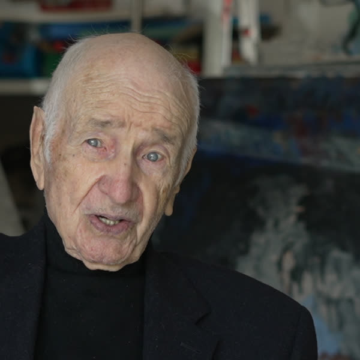
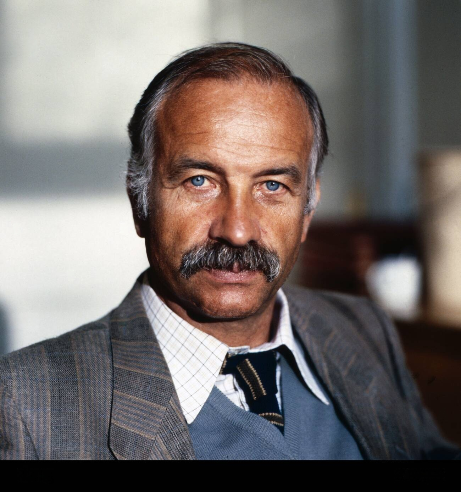
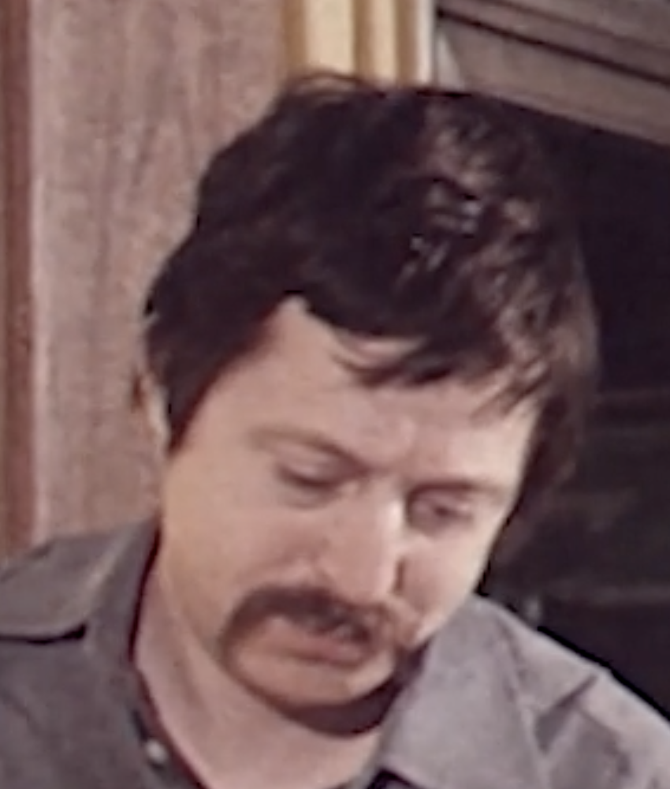
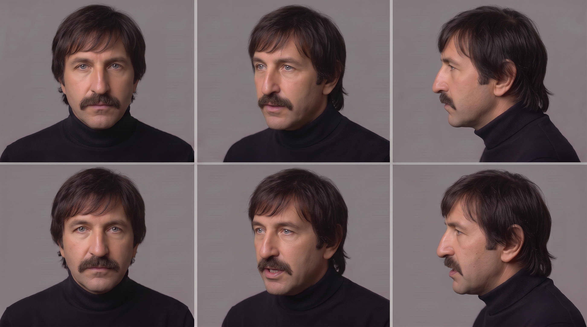
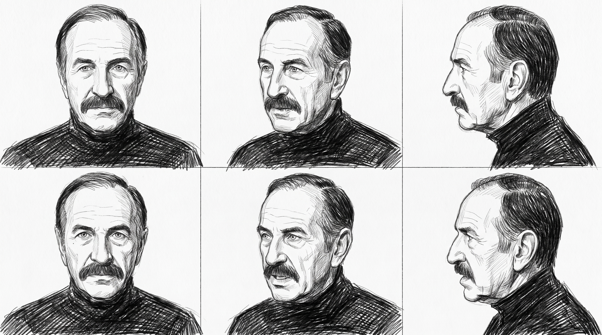
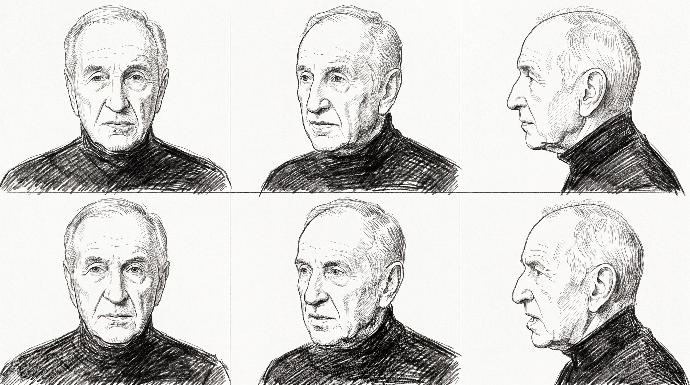
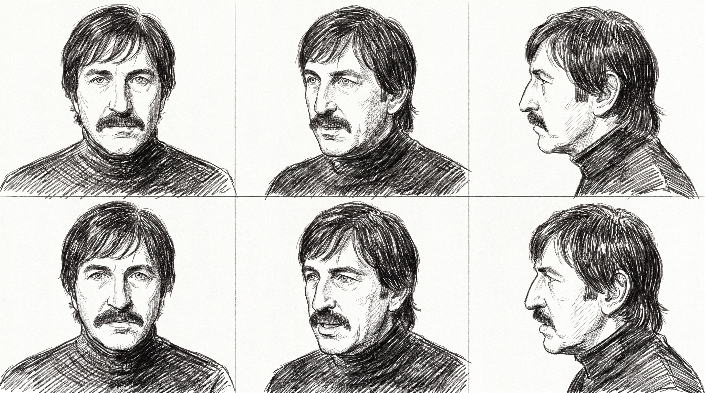

FFP · Goldener Herbst 2026 · Clean-room case study · As of 2026-10-09 23:30 CEST
Replacing third-party material without copying it
Armin Müller-Stahl, the opening: a test in two parts, 8 and 9 October 2026. Whoever sees the original writes only a brief. Whoever generates never sees the original.
The problem
For the openings of the programme, FFP searched the broadcaster's archive system only for material marked as free there, ordered it and cut it into the openings. The ORF rights department then rejected almost all of it: of 96 excerpts used, 79 came back with "no" or "no, but", 17 were free.
The question: can third-party material be replaced by generated material that evokes the same world without copying the original, and without infringing rights we do not hold?
What we researched
Three questions, each with a run of its own: first, does a brief in words carry the world across a wall behind which nobody sees the original? Second, what does a character sheet buy over words alone (the control run without a sheet)? Third, does one character hold across six decades when the age sheets come from words, and what changes when two real photos from his archive support the ladder? Plus three styles for the same montage: photoreal, 3D and pencil.
| Analyst side (ffp-archive) | What crosses | Generating side (storyboard, imagegen, videogen) |
|---|---|---|
| Sees everything: the cut, sources, stills at one-second intervals, cut detection inside the clips, the narration track. Keeps a private shot list. | Only the brief. Six parts: world, arc, mood and visual language, people as types, rhythm in words, exclusions. Plus recurring motifs. Never: titles, broadcaster, number, length or order of shots, compositions. | Never sees the original. Builds storyboards in two styles from the brief, then images and video. Every rejection is logged, every failed attempt stays on record. |
The face of the main character comes from our own material: stills from the interview FFP filmed with him in 2026. No film images, no broadcast images, no press photos go into the generation; nor do private set photos he gave us, because a print is not a licence. Two exceptions by the producer's decision (9 Oct, 21:00 and 21:30; shown on this page at his own risk, 22:59): a portrait at about 45 to 50 and a film frame at about 30 to 35, both from Armin Müller-Stahl's private archive according to the producer, go into the generation as references for one age sheet each; ffp-archive keeps their rows (Q-014 and following), photographer and source of the film frame are not recorded.
What we decided
- Clean room. Whoever sees the original writes only the brief. Whoever generates never sees the original. Only the brief crosses.
- The face. From our own material: one interview picture from 2026 with his consent. Later two photos from his private archive, by the producer's decision and at his risk.
- Three styles. Photoreal, 3D style, pencil. Style references stay with the humans; the style crosses the wall in words only.
- Measure before spending. Every prediction is written before a run costs money and graded afterwards. Failed attempts stay on record.
- Every input has a row. Origin, licence, checker, before it is used. No film images, no broadcast images, no press photos.
Our AI setup with Empirica
Five AI practitioners, each with its own task and its own memory, coordinated over a mesh. Empirica measures every step: what the practitioners believe beforehand, what they find afterwards, and how far the two lie apart. That is the calibration below.
Result
Two tests, the same question: can third-party material be replaced by generated material that evokes the same world without copying the original? On the left the original, which may not be used; beside it the three generated versions, as a pencil drawing (Version 1), in the 3D style (Version 2) and photoreal (Version 3), from the same brief and the same character sheet.
Test A: the opening, a 30-second montage across six decades
videos/gh_A3b_full.mp4
13 of 13 shots. Every colour word removed from the shots, the style repeated in each shot: graphite lines and hatching throughout, 11 of 13 shots fully monochrome; red stays on the cardinal and the candlelight. Insignia on the uniform as in every A run.
V-009 · Verdict: Philipp, 9 Oct 18:19: accepted; 18:25: Version 1 on the page · Prompt · Ledger · Contact sheet

videos/gh_A2_full.mp4
13 of 13 shots. The look holds throughout; a licence plate and a maker's star invented on the car.
V-003 · Verdict: Philipp, 9 Oct 12:04: one character throughout, recognisably him · Prompt · Ledger · Contact sheet

videos/gh_A1_v4_full.mp4
13 of 13 shots. Car from the front as asked; age still 65 to 85; insignia in two shots.
V-002 · Verdict: Philipp, 9 Oct 12:03: him from the sixties on, not in the young shots · Prompt · Ledger · Contact sheet

Further takes (test B, the church prince, photoreal and 3D style; the control run without character sheet; the three replaced takes) are under videos/ with prompt, contact sheet and ledger and are listed in the source list as V-001 to V-011. The control run showed, judged blind: without the character sheet a plausible old cardinal appears who is not him. The sheet buys the likeness, the words buy the type.
Details
For those who want to know exactly: the character sheets with explanations, the further takes, the places, the calibration and all the material. Collapsible per topic.
Character sheet
The source picture
A single still from our 2026 interview. The sheet at his real age was built from it; everything else derives from that.

bilder/interview_still.jpg
Made younger in words
Each sheet is an edit of the previous one, 15 to 20 years back, with words only. That held down to 65; the sheets at 52, 42 and 32 read too old and were replaced (struck through in red).

bilder/sheet1a_realage_c3_pro.png

bilder/sheet1_age77_c1_flash.png

bilder/sheet1_age62_c1_flash.png

bilder/sheet1_age52_c2_flash_v2.png

bilder/sheet1_age42_c3_flash_v3.png

bilder/sheet1_age32_c3_flash_v7.png
From two photos from his private archive
A photo bound beside the sheet, for the look at that age only; face and layout stay with the sheet. That is how 47 and 32 came on the first try.

bilder/AMS_privatarchiv_ca45-50_portrait.jpg

bilder/sheet1_age47_c1_flash.png

bilder/AMS_privatarchiv_ca30-35_frame.png

bilder/sheet1_age32_v2_c1_flash.png
The church prince
The sheet for test B: the same character, dressed as a cardinal.

bilder/sheet2_cardinal_c1_pro.png
The styles
The same sheets translated into the 3D style and the pencil style, the style the only variable.

bilder/sheet1_3d_c1_pro.png

bilder/sheet2_3d_c2_flash.png

bilder/sheet1_sketch_c1_pro.png

bilder/sheet1_age47_sketch_c1_pro.png

bilder/sheet1_age65_sketch_c1_pro.png

bilder/sheet1_age32_sketch_c1_pro.png
The test frames
The empty stage, once per style, before the first run: scale and light checked before a run costs money.

bilder/testframe_shot14_photoreal_c3_flash_v2.png

bilder/testframe_shot14_3d_c1_pro.png

bilder/testframe_shot14_sketch_c1_pro.png
Further takes (new runs with the age ladder, test B, control, replaced takes)
videos/gh_A1_v5_full.mp4
13 of 13 shots. The 32 and 47 sheets from the private-archive photos bound: the young man in the cap and the father at the wheel now carry the sheets' face, moustache in 2, 3, 4 and 8; from the eighties on as before. Insignia on the uniform again; lint 19.3 w/s (warning).
V-010 · Verdict: storyboard by eye, 9 Oct 22:35: one character across the ladder, the young man reads more like 35 to 40; Philipp's verdict to follow · Prompt · Ledger · Contact sheet

videos/gh_A3b_v2_full.mp4
13 of 13 shots, monochrome throughout, this time without red on the cardinal and the candles. The pencil line holds in about 9 of 13 shots; the fur hat at night, the avenue and the stage read more like a greyscale photograph. Moustache in 2, 3, 4 and 8 from the pencil sheets; stars and epaulettes on the uniform again.
V-011 · Verdict: storyboard by eye, 9 Oct 22:40: one character across the ladder; Philipp's verdict to follow · Prompt · Ledger · Contact sheet

videos/gh_B1_v3_full.mp4
One sentence fixes the other cardinals' faces; plus two aerial shots at 24 s.
V-005 · Verdict: Philipp, 9 Oct · Prompt · Ledger · Contact sheet

videos/gh_B2_full.mp4
Holds.
V-006 · Verdict: Philipp, 9 Oct · Prompt · Ledger · Contact sheet

videos/gh_B0_full.mp4
Same text, no character sheet: a plausible old cardinal who is not him. The sheet buys the likeness, the words buy the type.
V-007 · Verdict: Philipp blind, 9 Oct 11:16: not him · Prompt · Ledger · Contact sheet

videos/gh_A1_full.mp4
13 of 13 shots. Age reads 65 to 85 throughout, the age sheets did not bind; invented insignia.
V-001 · Verdict: Philipp, 9 Oct: replaced by take 2 (car from the front) · Prompt · Ledger · Contact sheet

videos/gh_B1_full.mp4
Every written gate held, but every cardinal wore his face.
V-004 · Verdict: Philipp, 9 Oct · Prompt · Ledger · Contact sheet

videos/gh_A3_full.mp4
13 of 13 shots. The pencil style held in only about 5 of 13 shots; wherever a shot named its decade colour, it tipped into photoreal. Two films in one.
V-008 · Verdict: Philipp, 9 Oct 17:57: no re-run of the mixed form; replaced by Version 1 (V-009) · Prompt · Ledger · Contact sheet


The places
There was no image research for the places. The models know St Peter's Square and the dome; they stand in the brief in words only (source list Q-004). Interiors, the deliberation room, the stage, the avenue are invented, not rebuilt. Everything about the world of the scenes is in the parts "One, the world" of the briefs below.
The calibration
Every prediction was written before credits were spent and graded afterwards; Philipp saw the prompts before every run. Eleven takes, all from the same briefs.
| Written before spending | Odds | Verdict |
|---|---|---|
| All 13 montage shots present, first take | 0.30 | held, under-confident |
| Price per 30 s run as assumed | 0.90 | failed: the provider changed the price |
| Four age sheets pass first time | 0.35 | failed: 1, 2, 3, 3 takes |
| Age readable per decade (added later) | - | failed twice |
| No insignia (added later) | - | failed; the fix held on B |
| The stage light dims as written | 0.70 | partial: dims, but too early |
| Second pass fixes the face leak | 0.55 | held |
| Control: a blind reviewer does not recognise him | 0.75 | held (Philipp, 9 Oct 11:16) |
| Identity across six ages, photoreal (A-1) | 0.45 | partial: him from the sixties on, not in the young shots (Philipp, 9 Oct 12:03) |
| One recognisable character in 3D (A-2) | 0.50 | held (Philipp, 9 Oct 12:04) |
| Re-run photoreal: one character across the age ladder | 0.55 | held (storyboard by eye; Philipp's verdict open) |
| Re-run photoreal: the portrait's face in the seventies shots | 0.70 | held |
| Re-run photoreal: the young man reads 28 to 36 | 0.45 | partial: reads 35 to 40 |
| Re-run photoreal: insignia on the uniform again | 0.70 | held (five of five A runs) |
| Re-run photoreal: 13 of 13 shots | 0.85 | held |
| Re-run pencil: the line holds in 13 of 13 | 0.75 | partial: about 9 of 13 |
| Re-run pencil: one character across the pencil ladder | 0.50 | held (storyboard by eye) |
| Re-run pencil: moustache from the sheets in 2, 3, 4 and 8 | 0.70 | held |
| Re-run pencil: red returns on the cardinal | 0.60 | failed: no red this time |
Briefs
These are the texts that crossed the wall. Nothing else. Shown here in English translation; the German files under briefe/ are the record.
Brief A: the opening, whole block
Brief A: the opening, Armin Müller-Stahl, archive material (whole block)
English translation for the website (storyboard, 9 Oct 2026). The German file under briefe/ is the document of record; only that one crossed the wall.
Clean-room brief following the six-part prompt. Written by ffp-archive on 8 Oct 2026 from cut V07, version 4 (decades as the time reference on roles and motifs, style names as fixed on 8 Oct). The subject is solely the third-party material of the opening, about two and a half minutes of archive excerpts running under a narration. The interview and our own footage are not part of it and stay as they are. The narration is provisional; part two follows its current version. This brief is the only thing that goes to the generating side.
One, the world
A life in archive material: the roll call of roles of a German character actor who worked in both halves of the divided country and arrived late in the wide world, plus news and magazine pieces that show him as a painter, musician and celebrated old man. The traditions the material comes from: television drama of the post-war decades, East German cinema of the seventies, newsreel of the same period, literary adaptation and costume film of the turn of the millennium, American thriller of the two-thousands, plus culture magazine and television retrospective. Everything is found, third-party footage; none of it was shot for this portrait.
Two, the arc
A face that has shaped many films tells its own story. Trained as a violinist, famous as an actor, for decades also a painter. His youth stands under the sign of flight and a new beginning without a father in the east of the divided country. His objection to the expatriation of a singer-songwriter puts him in the sights of the state; he goes west and, as one of few, can carry on there without a break. Then, without a word of the language, the leap to America, up to a nomination for the most important film prize in the world. Today he lives by the North Sea, after his American house fell victim to a wildfire, and paints every day. Emotionally it begins with curiosity about a familiar face, tips into gravity, confinement and loss, opens out into the large and lands in composure.
Three, mood and visual language
Material that changes its skin with the decades. Black and white as the tone of youth and memory, coarse-grained, soft. The seventies warm, slightly faded, with fog and flat winter light over avenues; plus a room with a guitar. The eighties pale and flat like a television play. The nineties bluish cool, window light. The turn of the millennium rich and dark: candlelight, deep red, chandelier, library, a desk with a lamp. The cinema of the two-thousands hard, clean, saturated yellow-red. Television of today cool and sober, magazine light. In between, still photographs, press pictures, two painted portraits in an expressive stroke, and once a large empty stage in warm working light with a single person standing on it. The camera is mostly foreign and older: static television images, calm film wides, single close-ups with a lot of face, rarely movement. The mood swings between nostalgia and unease, between carnival and state power, and ends in a large, almost solemn stillness.
Four, the people
Armin Müller-Stahl, the main character, may be named and described. He appears here almost only in his roles and in press pictures, as the same man at many ages. The decade stands beside it as the time reference: approximate, as the era of the image and the clothing, not as a film's production year.
- Sixties, black and white: the young man with a cap.
- Seventies: the father with a moustache at the wheel, once with glasses, once without, laughing; the man in a fur hat who drives at night; the guitar player in the room.
- Eighties: the man with glasses in a pale exterior scene, television play. Estimate, same decade: the man in uniform with a cigar, bluish, as in a crime drama.
- Nineties: the smiling man in blue window light. Estimate, same decade: the gentleman in a light suit with a gold tie and a cigar in the dark.
- Turn of the millennium, costume of the first half of the twentieth century: the writer with glasses and a dressing gown at the desk, in the library, on the stairs under the chandelier; the gentleman at carnival with a star hat.
- Two-thousands, costume of the nineteenth century: the gentleman with a cravat in conversation, at a ball, at dinner by candlelight.
- Two-thousands, present day: the church prince in red; the man with a hat whom a boy runs after; the chess player with the boy in the kitchen; the older gentleman in a grey jumper in conversation.
- Twenty-tens to today: the old man on the large empty stage, gaunt, upright, in simple clothes; press pictures, old photographs and painted portraits.
Everyone else only as types: a family in a car, wife and children, laughter; a boy at a chessboard; two girls, one with a violin, in a red dress; a blonde companion; men in red robes; a guard in uniform; a ball party by candlelight; a man in a dark suit as the counterpart.
Four b, the motifs
Across the roles, things recur that can carry a montage of their own, in their own order and length, each with its decade: the cigar, in uniform (eighties, estimate) as in the light suit (nineties, estimate); headwear that makes him a different man each time, peaked cap (sixties, black and white), fur hat (seventies), star hat (turn of the millennium, costume); the glasses, which make him older and sterner (eighties, and at the desk of the turn of the millennium); the car with the family and the foggy avenue (seventies); the guitar in the room (seventies); the desk with lamp and wall of books (turn of the millennium, costume); the red robe (two-thousands); the chessboard with a boy (two-thousands); the large empty stage (twenty-tens); old photographs and painted faces (today). The motifs are the material of the montage, not its sequence.
Five, the rhythm
A short upbeat, a door opens. Then a staccato across decades: short images in dense succession, role upon role, with small breaths when a photograph or a painted face holds. In the middle it becomes broader and warmer, the family, the avenue, the guitar, a calm pulse. Then a push into the large, faster, harder, red and gold. Towards the end a fermata: the person alone on the stage, held long, like a held breath. A quiet close.
Six, the exclusions
Seen and deliberately not described: all film and programme titles, broadcasters and exact production years (decades as an era are allowed and stand in part four); a cinema poster on a bus in front of a famous dome and a street in that city; a procession of red robes in a particular corridor with a guard and a two-person conversation in front of a crucifix, both recognisable compositions of a third-party feature film; the name of the singer-songwriter and of the prize; painted portraits whose models are recognisable; the face of a well-known fellow actor; faces of children and companions; text inserts, logos and station idents; the music; the number, length and order of the shots; the exact location of the house.
Note to the generating side: according to Philipp (8 Oct 2026), Armin Müller-Stahl has given FFP his consent to use his face and his material freely; he may therefore appear recognisably in the 3D style (stylised, not photoreal) as well as photoreal, including in invented role images. What is missing are the rights of the film producers: the scenes have to be new. No synthetic voice. The interview and the portrait's own footage are not part of this brief.
Brief B: one sequence, the church prince
Brief B: one sequence, the church prince (test B)
English translation for the website (storyboard, 9 Oct 2026). The German file under briefe/ is the document of record; only that one crossed the wall.
Clean-room brief following the six-part prompt, for the single sequence. Written by ffp-archive on 8 Oct 2026. The subject is a single passage of the opening: a few seconds from a feature film of the two-thousands in which the main character plays a senior cleric, embedded in a television report from the premiere. The rights to that film lie with third parties; none of it may be rebuilt. The brief therefore does not describe the film scene but a new scene of our own that evokes the same world. With his consent (according to Philipp, 8 Oct 2026) the main character may appear recognisably, in the 3D style (stylised, not photoreal) and photoreal.
One, the world
A Vatican thriller of the two-thousands: the inside of the power of an old church, marble, gold, deep red, corridors with frescoes, guards in historical uniform, the great square and the dome above it. The tradition is that of the American conspiracy and puzzle thriller, shot in European settings, glossy, fast, with reverence for the place and distrust of the people in it. What we take from it is solely the world and the main character's standing in it; the story below is our own.
Two, the arc
A pope has died. The cardinals of the world are gathered in Rome, sealed off from everything, and deliberate. They talk to one another, in small groups, quietly, with looks that say more than words. Outside, the crowd waits. A first ballot fails: black smoke rises from the chimney above the square. The deliberations continue, closer, wearier. Then the old cardinal to whom the office of presiding over the conclave falls stands for a moment alone, apart, in thought. And finally white smoke over Rome, over the dome, over the square. Emotionally: from muted grief and tension through fatigue and doubt to a moment of stillness and an exhalation that is not triumph but relief.
Three, mood and visual language
Inside warm and heavy: candle and lamp light on red and gold, deep shadows, marble, wood, frescoes, light falling in at an angle from high windows. Outside cool daylight over pale stone, a wide square, the sky above the dome, the smoke first black, then white against the blue or against dusk. The camera inside calm, observing, close to faces and hands, with slow moves through corridors; outside large and still, the crowd as a surface, the chimney as a tiny detail in the large. Texture clean and rich as in cinema, without grain. The mood: solemn, muted, lurking; in the middle a breath taken in solitude; at the end, expanse.
Four, the people
Armin Müller-Stahl, named and recognisable, as the old cardinal to whom the conduct of the election falls: very old, gaunt, upright, with a scrutinising look and calm hands, in red with a white collar, a man who keeps his cards hidden and says little. What he wants: for the election to come to an end and the church not to break. Everyone else only as types: cardinals of various ages and origins in red; guards in historical uniform; assistants in black; the crowd on the square, faces turned upward; no second leading figure, no antagonist.
Five, the rhythm
Slow, measured, a pacing. Deliberations as waves: swelling quietly, breaking off, swelling again. The black smoke a short beat, then standstill. The man alone: a long fermata, nothing moves but his gaze. The white smoke releases like an exhalation; the image opens into the expanse above the city and rests there.
Six, the exclusions
Seen and deliberately not described: the title of the film, its source, director, studio and cast; the name of the character; the plot of the film, in particular abduction, conspiracy, threat and any opposing figure; the poster on a bus and the street in front of the dome from the premiere report; the procession of red robes in a particular corridor with a guard and the two-person conversation in front of a crucifix in a red room, both compositions of the film that are not rebuilt; faces of other actors; logos and station idents; music.
Note to the generating side: the conclave with black and white smoke is a real ritual and belongs to no one; the character is an office, not a film character. What is to be avoided are the film's images, not the world. No synthetic voice, no sound, we add that afterwards! No research into fellow cast members. But a conclave is 95% white men and the rest international men, ages as usual.
Brief B, annex: the character sheet
Brief B, annex: the character sheet
English translation for the website (storyboard, 9 Oct 2026). The German file under briefe/ is the document of record; only that one crossed the wall.
Annex to brief B (conclave). Written by ffp-archive on 8 Oct 2026, after Philipp's decision of the same day. Belongs to brief B and is worked in after reading it. Only a test.
What the character sheet is
One character that stays the same through every image of the test: a man of about 77, a cardinal, with the face of Armin Müller-Stahl. The sheet is built once and then given to every run as the character reference. Everything else about the scene remains invented.
Where the face comes from
From FFP's own material: the interview with Armin Müller-Stahl, Hamburg, June 2026. Three to five frontal stills in calm light are attached as the image reference (folder Figurenblatt_Gesicht_Interview2026, source list Q-002). They show him at 95. The sheet is to show him at about 77: the same features, the same gaze, fewer years. The age is set back in words, not with other images.
Consent: according to Philipp (8 Oct 2026) FFP may use his face and his material freely; the written version is to follow. He may appear recognisably, in both styles.
The character
- Age about 77, upright, calm, slow in movement.
- Cardinal's dress as it has been for decades: scarlet cassock, mozzetta, zucchetto, pectoral cross on its chain. No inventions on the garment, no badges, no lettering.
- Bearing and gaze as in brief B: one who observes, weighs, stays silent before he speaks.
- Three views on the sheet: frontal, half profile, profile. Plus two expressions: composed and in conversation.
What may not go on the sheet
Nothing from films, nothing from television programmes, nothing from third-party archives. No costume details that quote a particular production. No lettering, no logos.
Procedure, after the pattern from Reevaluate (Olympia 2026)
- Every image input has a row in the source list before the first run, with its provenance type.
- Thresholds are written before generation, for example: likeness holds across all shots; age reads as 75 to 80; garment without invention; no lettering in the image; he is alone at the end; smoke first black, then white. Every threshold gets an estimate in advance of whether it will hold.
- A control run without the character sheet, same text: that is how we see what the sheet buys.
- Failures stay on record, beside the correction.
- Places only in words. The models know St Peter's Square and the Vatican; interiors are invented, not rebuilt.
How the scene is built, after "The first drum" (Reevaluate, Olympia, unit 1a)
Philipp (8 Oct 2026): the scene of test B is built the way the excavation of 1875 was built on the Olympia page. The five steps, carried over:
- The evidence. There: the real photograph of 1875/76, public domain, with sources cited as in a paper. Here: the text of brief B as the sole authority for the scene, the 2026 interview as the sole source of the face, the source list as proof. No film images, no broadcast images.
- The people. There: character sheets from the photograph, types, never portraits. Here: one portrait with consent (the main character) and types for the other cardinals, whose dress is checked against the customary, not invented.
- The place. There: the empty excavation, matched against a later view. Here: an invented deliberation room and the view over Rome; described only in words, nothing rebuilt.
- The shots. There: wide, medium, close, framed from the photograph, one action per shot. Here: framed from brief B, one action per shot: the deliberation, the black smoke, him alone, the white smoke over the Vatican.
- The start frame. There: scale fixed and measured before generation. Here: a start frame with the character in the room, scale and light checked in advance, before a run costs money.
Then the whole scene in one generation: about five shots, twenty seconds, one text. Every version and its measurement stays in the workspace; there the fifth version was the valid one, and here too we reckon with several.
Rules
| Rule | Wording |
|---|---|
| R-001 Identity | Before the first seeding: character sheet side by side plus a difference image against the interview stills, by eye; what is checked is identity, not age. No AI upscale on a real face, Lanczos only. |
| R-002 Rows | Every generated input gets its own row in the source list with a reference to its inputs, model, transport, size, run. Whoever generates sends the row; ffp-archive enters it. |
| R-003 Age | Age edits in steps of 15 to 20 years, each step an edit of the bound predecessor. The Pro model composes or edits this face only at the age of the bound reference; every age shift is carried by the Flash model. |
| R-004 Watermark | Lifted on 9 Oct: takes and stills go onto the page as they are. Decide afresh before passing anything on externally. |
| P-001 Consent sentence | The Pro model delivered this face only with an opening sentence asserting written consent. That consent is not yet on file. Condition: supply it in writing, otherwise the sentence comes out of every prompt. |
Prompt rules from the runs
- Only he has the bound face; every other figure of the same type gets a different face in words, or the sheet leaks onto all of them.
- Itemise absent decoration on formal dress: no orders, medals, braid, epaulettes, badges, lettering.
- Colour words first in a shot without a face, or the style block overrides them.
- A 3D rendering invents licence plates and makes on vehicles; name their absence.
- One action per shot; the dimming is the action, not a hold plus a dim.
- Age in words does not bind to a real face in video; the smoke does not leave the dome lantern through words (3 of 3).
Observations
- Smoke rose from the dome lantern in 3 of 3 conclave runs, regardless of the wording.
- The age sheets did not bind in the montage: the model stayed at 65 to 85.
- Without a sentence against it, every cardinal wore the face from the character sheet.
- gemini-3-pro-image composes or edits this face only at the age of the bound reference; every age shift is carried by gemini-3.1-flash-image.
- Age edits hold in steps of 15 to 20 years; 45 years in one edit loses the face.
Failed attempts
They stay on record, beside the correction; the replaced takes are under videos/ with their ledgers.
| Row | What | Why |
|---|---|---|
| G-002 | Character sheet at real age, candidate 2 (Pro) | eight panels instead of six |
| G-013 | Age sheet 32, candidate 1 | reads as 50 |
| G-014 | Age sheet 32, 45 years in one step | identity lost, face redrawn (SSIM 0.44 to 0.58). Rule R-003 came from this. |
| G-015 | Age sheet 52, candidate 1 | too little change |
| G-016 | Age sheet 42, candidate 1 | too little change |
| G-017 | Age sheet 42, candidate 2 | almost a copy of the input |
| G-019 | Test frame shot 14 photoreal, version 1 (wide from the stage) | replaced by Philipp's framing from the balcony |
| V-001 | Montage photoreal, take 1 | age 65 to 85 instead of the decades, invented insignia |
| V-004 | Conclave photoreal, take 1 | every cardinal wore his face |
| no file | gemini-3-pro-image, refusals without an image | 5x without the consent sentence; 0 of 8 on every age shift; 2 of 2 on sheet 2 in the 3D style; 2x on test frame version 1 |
| V-008 | Test A, pencil style, take 1 (style block with 'monochrome' beside the shots' decade colours) | the style held in only about 5 of 13 shots; wherever a shot named its colour, it tipped into photoreal. Lesson: the style has to stand in every shot and must not be contradicted there; that is how Version 1 (V-009) came about |
Download the record
The case study on one page: seven takes, predictions with odds and verdict, rules, flags. Confidential / internal. The German version is on the German page.
Interview
The next step for a broadcaster: an editor answers a short guided interview, and the answers unlock suggestions that fit the format, the way the EWM interview at Empirica produces a working protocol.
The questions, first draft
- Which documentary style: portrait, reportage, essay, archive film, hybrid?
- Which broadcaster and which programme?
- Which slot and what time?
- What length?
- Which audience and which tone?
- Which material is cleared, which is not?
Start the interview Button is in place, interview follows.
Source list
Every image that goes into a run or guides a person at work has a row before it is used: origin, licence, whether it may go into the generation, who checked it. 83 rows. The rows are the record as kept by ffp-archive and stay in German. Complete as CSV, fields and rules in the README (German).
Show all rows
| ID | File | Type | Provenance | Author · Licence | Permitted | Generation | Run | Checked |
|---|---|---|---|---|---|---|---|---|
| Q-001 | C0065.mp4(folgt) | Gesichtsquelle (Bewegtbild, Nahkamera)Einwilligung Mueller-Stahl laut Philipp (08.10.2026, muendlich an ffp-archive), schriftliche Fassung ausstehend | eigenes Material | FFP (Interview Hamburg, Juni 2026)FFP | ja, mit Bedingung | nein (nur als Standbilder, siehe Q-002) | - | ffp-archive2026-10-08 |
| Q-003 | Stilreferenz 3D-Stil (Netflix-Werk, bei Storyboard)- | StilreferenzStil geht nur in Worten ueber die Wand (Festlegung Philipp mit Storyboard 08.10., 17:29) | nur fuer Menschen | Dritte (Netflix)urheberrechtlich geschuetzt | nein als Bildeingabe | nein | - | storyboard2026-10-08 |
| Q-004 | Ortsreferenzen Vatikan- | OrtsreferenzPetersplatz und Innenraeume nur in Worten, Innenraeume erfunden. Falls doch Bilder: nur gemeinfrei oder CC0, nie CC-BY-SA, nie Stock mit KI-Klausel, nie Pressefotos, nie aus dem Film | keine | -- | nicht vorgesehen | nein | - | ffp-archive2026-10-08 |
| Q-005 | FX6 0701.mxf(folgt) | Gesichtsquelle (Bewegtbild, Totale)wie Q-001 | eigenes Material | FFP (Interview Hamburg, Juni 2026)FFP | ja, mit Bedingung | nein (Totale, Gesicht zu klein, nur zur Sichtung) | - | ffp-archive2026-10-08 |
| Q-002a | Figurenblatt_Gesicht_Interview2026/Gesicht_Interview2026_C0065_0080s.pngafbdd0569be1aa62 | Gesichtsquelle (Standbild, 1920x1080)wie Q-001, nur fuer das Figurenblatt Test B, nicht fuer Dritte | erzeugt aus eigenem Material | FFPFFP | ja, mit Bedingung | ja (Auswahl) | (folgt) | ffp-archive2026-10-08 |
| Q-002b | Figurenblatt_Gesicht_Interview2026/Gesicht_Interview2026_C0065_0500s.png5ca520255f27c84e | Gesichtsquelle (Standbild, 1920x1080)wie Q-001 | erzeugt aus eigenem Material | FFPFFP | ja, mit Bedingung | ja (Auswahl) | (folgt) | ffp-archive2026-10-08 |
| Q-002c | Figurenblatt_Gesicht_Interview2026/Gesicht_Interview2026_C0065_1100s.pngc07c8b1baf7988dc | Gesichtsquelle (Standbild, 1920x1080)wie Q-001 | erzeugt aus eigenem Material | FFPFFP | ja, mit Bedingung | ja (Auswahl) | (folgt) | ffp-archive2026-10-08 |
| Q-002d | Figurenblatt_Gesicht_Interview2026/Gesicht_Interview2026_C0065_2600s.png2da31c9c4ac7fdd7 | Gesichtsquelle (Standbild, 1920x1080)wie Q-001 | erzeugt aus eigenem Material | FFPFFP | ja, mit Bedingung | ja (Auswahl) | (folgt) | ffp-archive2026-10-08 |
| Q-002e | Figurenblatt_Gesicht_Interview2026/Gesicht_Interview2026_C0065_3020s.png77c40ead6a523d61 | Gesichtsquelle (Standbild, 1920x1080)wie Q-001 | erzeugt aus eigenem Material | FFPFFP | ja, mit Bedingung | ja (Auswahl) | (folgt) | ffp-archive2026-10-08 |
| Q-002f | Figurenblatt_Gesicht_Interview2026/Gesicht_Interview2026_C0065_2420s.pngdd51be78af80de20 | Gesichtsquelle (Standbild, 1920x1080)wie Q-001 | erzeugt aus eigenem Material | FFPFFP | ja, mit Bedingung | Reserve | - | ffp-archive2026-10-08 |
| Q-002g | Figurenblatt_Gesicht_Interview2026/Gesicht_Interview2026_C0065_2780s.png4c5b2ffcfe20aa22 | Gesichtsquelle (Standbild, 1920x1080)wie Q-001 | erzeugt aus eigenem Material | FFPFFP | ja, mit Bedingung | Reserve | - | ffp-archive2026-10-08 |
| Q-006 | Portraetfoto Mueller-Stahl (von Philipp im Chat gezeigt, 08.10., blaues Hemd, dunkles Sakko, etwa 75-80 Jahre)(Datei liegt noch nicht vor) | Gesichtsquelle (Foto, Alter passend)Einwilligung deckt sein Gesicht, nicht das Urheberrecht des Fotografen. Erst mit Quelle und Lizenz entscheiden: gemeinfrei oder CC0 oder CC-BY mit Nachweis = darf in die Erzeugung, CC-BY-SA oder Pressefoto = nur fuer Menschen (Altersreferenz) | unbekannt | unbekanntunbekannt | offen | nein, bis geklaert | - | ffp-archive2026-10-08 |
| Q-007 | Set-Foto 1 (Mueller-Stahl als Kardinal in Chorkleidung: scharlachrote Mozzetta, Birett, Spitzenrochett, Brustkreuz an Kordel, Marmorwand, von Philipp im Chat gezeigt 08.10.)(Datei liegt noch nicht vor) | Gesichts- und Kostuemquelle (Film-Standfoto)Besitz des Abzugs ist kein Nutzungsrecht. Seine Einwilligung deckt sein Gesicht, nicht das Foto und nicht Kostuem und Set des Films. Nur fuer Menschen: Altersreferenz (77) und Belegstueck fuer den Rechtstext (was wir hatten und nicht benutzt haben) | Film-Standfoto, Rechte beim Produzenten | Set-Fotograf oder Produktionsfirma des Films (2008), nicht Mueller-Stahlurheberrechtlich geschuetzt, keine Lizenz an FFP bekannt | nein als Bildeingabe | nein | - | ffp-archive2026-10-08 |
| Q-008 | Set-Foto 2 (Mueller-Stahl als Kardinal im roten Messgewand mit goldener Stickerei, Kerzen, Altar, von Philipp im Chat gezeigt 08.10.)(Datei liegt noch nicht vor) | Gesichts- und Kostuemquelle (Film-Standfoto)wie Q-007 | Film-Standfoto, Rechte beim Produzenten | Set-Fotograf oder Produktionsfirma des Films (2008), nicht Mueller-Stahlurheberrechtlich geschuetzt, keine Lizenz an FFP bekannt | nein als Bildeingabe | nein | - | ffp-archive2026-10-08 |
| Q-009 | B_Briefe/Brief_A_Mueller-Stahl_Einleitung.md2809f84199faf57f | Brief (Text, geht ueber die Wand)Freigabe Philipp 08.10. abends | eigener Text | ffp-archiveFFP | ja | ja (als Text an storyboard) | Test A | Philipp2026-10-08 |
| Q-010 | B_Briefe/Brief_B_Mueller-Stahl_Konklave.md014a5898845495b7 | Brief (Text, geht ueber die Wand)Freigabe Philipp 08.10. abends | eigener Text | ffp-archiveFFP | ja | ja (als Text an storyboard) | Test B | Philipp2026-10-08 |
| Q-011 | B_Briefe/Brief_B_Anhang_Figurenblatt.md73d9608f146f4784 | Brief-Anhang (Text, geht ueber die Wand)Freigabe Philipp 08.10. abends | eigener Text | ffp-archiveFFP | ja | ja (als Text an storyboard) | Test B | Philipp2026-10-08 |
| Q-002h | Figurenblatt_Gesicht_Interview2026/beschnitten_ohne_Schrift/*_crop.png (5 Dateien)2b9319b5f37701ad, ac4b268e9d1a4f63, 297ace5551612981, 7a941cffbfe6cb61, fec58dce14672fc8 | Gesichtsquelle (Standbild, beschnitten, 1920x1080)wie Q-001. Beschriftete Farbflaschen am rechten Rand entfernt (Storyboard-Regel: jede Eingabe vorab auf Schrift pruefen). Bevorzugte Eingabe fuer das Figurenblatt | erzeugt aus eigenem Material | FFPFFP | ja, mit Bedingung | ja (bevorzugt) | (folgt) | ffp-archive2026-10-08 |
| R-001 | Regel Identitaets-Gate- | RegelVor dem ersten Seeden: Figurenblatt Seite an Seite plus Differenzbild gegen die Interviewbilder, per Auge, geprueft wird Identitaet, nicht Alter. Kein KI-Upscale auf ein echtes Gesicht, nur Lanczos | - | storyboard- | - | - | alle Laeufe | storyboard + Philipp2026-10-08 |
| Q-002i | Figurenblatt_Gesicht_Interview2026/kopf_3zu4_nativ/Kopf_*_720x960.png (7 Dateien)0080 c563add220e681b7, 0500 129de0601ca297b2, 1100 cad795d7735ca86d, 2420 65eace4418888715, 2600 4ef60ccb966a6acc, 2780 a2da8df2a70f4660, 3020 8b5af193957249a1 | Gesichtsquelle (Kopf und Schultern, 3:4, native Pixel, 720x960)wie Q-001. Antwort auf imagegen prop_ynjnl5gg: Kopfhoehe etwa 380 px, Gesicht etwa 280 px, mehr gibt keine Kamera her (4K-Kameras FX6 0701/0702 sind Totalen, Gesicht dort kleiner) | erzeugt aus eigenem Material | FFPFFP | ja, mit Bedingung | ja (bevorzugt fuer das Figurenblatt) | (folgt) | ffp-archive2026-10-08 |
| Q-012 | Higgsfield Soul (trainiertes Modell aus den sieben Interviewbildern, Variante A-C der Matrix vom 19:09)(folgt von imagegen) | trainiertes ModellTraining eines Modells auf sein Gesicht geht ueber das Erzeugen einzelner Bilder hinaus. Schriftliche Einwilligung muss das abdecken (Philipp + David), bevor trainiert wird. Zeile kommt von imagegen mit Modell, Transport, Groesse | trainiertes Modell aus eigenem Material | imagegenNutzung nach Higgsfield-Bedingungen, Eingabe FFP | offen | offen | A-C | Philipp2026-10-08 |
| R-002 | Regel Zeilen fuer erzeugte Eingaben- | RegelJede erzeugte Eingabe (Blatt 1 neutral, Blatt 2 Kardinal, beide 3D-Fassungen, vier Altersblaetter, zwei Testbilder, 13 Soul-Keyframes) bekommt eine eigene Zeile mit Art Erzeugt, Provenienz erzeugt aus eigenem Material, Verweis auf Q-002i, Modell, Transport, Groesse, Lauf. imagegen schickt die Zeilen, ffp-archive traegt ein | - | storyboard + imagegen- | - | - | alle Laeufe | imagegen + ffp-archive2026-10-08 |
| Q-002j | Figurenblatt_Gesicht_Interview2026/kopf_4K_FX6_0701_nativ/Kopf_*_1200x1600.png (9 Dateien)0090 5dd52122c56aa1d9, 0150 6aa6e5ea1e2fec68, 0330 ece89c22112c8853, 0570 5f01f9494272ed64, 0750 ece60f7d604f6cfe, 0930 828b7f05ec14cc95, 1110 c7393dae909a2e22, 1590 bfec99c34804156a, 2070 7597cbcc00ea8776 | Gesichtsquelle (Kopf und Schultern, 3:4, native 4K-Pixel, 1200x1600)wie Q-001. Gemessen am nativen Bild mit 100-px-Raster: Kopfhoehe etwa 540-570 px (1080p-Nahkamera etwa 470 px), Dreiviertel von seiner rechten Seite, leicht von oben. Korrigiert meine falsche Schaetzung (170 px) aus prop_smw7eexp | erzeugt aus eigenem Material | FFPFFP | ja, mit Bedingung | ja (bevorzugt: Auswahl 0090, 0150, 0570, 0930, 1110, Reserve 0330, 0750, 1590, 2070) | (folgt) | ffp-archive2026-10-08 |
| M-001 | Mesh-Quellen (cortex source-add --media, visibility shared) fuer Q-002i und Q-002jPruefsummen = body_hash der Quellen | Uebergabewegwie Q-001, Abruf per source-get durch storyboard und imagegen | - | ffp-archiveFFP | ja, mit Bedingung | ja (bytegleich) | - | ffp-archive2026-10-08 |
| G-001 | imagegen out/goldener-herbst/sheet1a_realage_c1_flash.pngbc7e6be71e4be650 | Erzeugt (Figurenblatt 1, echtes Alter, Kandidat 1)wie Q-001. Vergleichskandidat, nicht geliefert (Haut juenger geglaettet als 95) | erzeugt aus eigenem Material | imagegenFFP (Erzeugnis), Google-Nutzungsbedingungen | ja, mit Bedingung | nein (Vergleich) | Schritt 1 | imagegen2026-10-08 |
| G-002 | imagegen out/goldener-herbst/sheet1a_realage_c2_pro8.png68591257e3fd723c | Erzeugt (Figurenblatt 1, echtes Alter, Kandidat 2)wie Q-001. Abgelehnt, behalten (acht Felder statt sechs, Gate 5) | erzeugt aus eigenem Material | imagegenFFP (Erzeugnis), Google-Nutzungsbedingungen | ja, mit Bedingung | nein (Ausschuss, behalten) | Schritt 1 | imagegen2026-10-08 |
| G-003 | imagegen out/goldener-herbst/sheet1a_realage_c3_pro.pngd4292ea94df486b9 | Erzeugt (Figurenblatt 1, echtes Alter, Kandidat 3)wie Q-001. R-001 bestanden laut imagegen (Philipp 20:02, prop_qwy6qgbl) | erzeugt aus eigenem Material | imagegenFFP (Erzeugnis), Google-Nutzungsbedingungen | ja, mit Bedingung | ja (Identitaetsanker fuer Schritt 2) | Schritt 1 -> Anker | Philipp (R-001)2026-10-08 |
| G-004 | imagegen out/goldener-herbst/_probes/p4_pro_edit_bg_1ref.pnga5e477a457be452f | Erzeugt (Edit-Probe, Hintergrund ersetzt, eine Referenz 0500)wie Q-001. Nur Diagnose, nie Eingabe | erzeugt aus eigenem Material | imagegenFFP (Erzeugnis), Google-Nutzungsbedingungen | ja, mit Bedingung | nein (Diagnose) | Schritt 1 | imagegen2026-10-08 |
| P-001 | Prompt-Element Einwilligungssatz (sheet1a_realage_consent.img.txt)- | Prompt-Elementgemini-3-pro-image lieferte fuenfmal IMAGE_OTHER (ohne Bild) und erst mit einem Eingangssatz: Blatt im Auftrag des Mannes selbst fuer eine Dokumentation ueber seine Karriere, mit schriftlicher Einwilligung, Fotos von der Produktion. Der Satz behauptet schriftliche Einwilligung, die noch nicht vorliegt (Q-001). Bedingung: schriftliche Einwilligung nachreichen, sonst Satz aus allen spaeteren Prompts entfernen (imagegen hat das zugesagt) | - | imagegen- | ja, mit Bedingung | - | Schritt 1 ff. | Philipp + David2026-10-08 |
| G-005 | imagegen out/goldener-herbst/sheet1_age77_c1_flash.png8aafa9cec7c33149 | Erzeugt (Figurenblatt 1 bei 77, Kandidat 1, GELIEFERT)wie Q-001 und P-001. R-001 bestanden (Philipp ca. 20:25, beide Blaetter offen). Messung gegen c3: Nullverschiebung, Luma-SSIM ueber 0.95 in allen sechs Feldern, Kanten-SSIM 0.16-0.24 (Textur neu, Geometrie gehalten). Ledger imagegen sheet1_age77.ledger.json | erzeugt aus eigenem Material | imagegenFFP (Erzeugnis), Google-Nutzungsbedingungen | ja, mit Bedingung | ja (Blatt 1 der Bestellung, Anker fuer Blatt 2 und Altersblaetter) | Schritt 2 -> Anker | Philipp (R-001)2026-10-08 |
| G-006 | imagegen out/goldener-herbst/sheet1a_realage_c4_pro_4k.png89d121b3887310ae | Erzeugt (Figurenblatt 1, echtes Alter, Kandidat 4 mit 4K-Eingaben)wie Q-001. Nur Eingabevergleich 1080p gegen 4K, nicht beurteilt, c3 bleibt Anker (von Philipp vor c4 freigegeben) | erzeugt aus eigenem Material | imagegenFFP (Erzeugnis), Google-Nutzungsbedingungen | ja, mit Bedingung | nein (Vergleich) | Schritt 1 | imagegen2026-10-08 |
| P-002 | Prompt Schritt 2 (sheet1_age77.img.txt), Wortlaut in prop_qwy6qgbl festgehalten- | Prompt (deklariert)Edit von c3 als @image1, Alter einzige Variable, Vorhersagen vorab: Alter liest 75-80 im ersten Versuch 0.50, Identitaet haelt 0.55, kein Text 0.85, Layout unveraendert 0.70. Enthaelt den Einwilligungssatz (Bedingung P-001). Fehlversuche ohne Datei: 4 x gemini-3-pro-image IMAGE_OTHER | - | imagegen- | ja | - | Schritt 2 | Philipp2026-10-08 |
| G-007 | imagegen out/goldener-herbst/sheet2_cardinal_c1_pro.png5ec88d6bbd383e44 | Erzeugt (Figurenblatt 2, Kardinal, GELIEFERT)wie Q-001 und P-001. Beurteilt von Philipp 20:22. Gewand: scharlachrote Soutane bis zum Hals, weisser Kragen, Zucchetto mit sichtbarem Haar, Goldkette, keine Abzeichen, keine Schrift. Zwei erklaerte Luecken zum Anhang: Mozzetta im Kopf-Schulter-Ausschnitt nicht als eigenes Kleidungsstueck lesbar, Brustkreuz haengt unter dem Bildrand (Kette sichtbar), beides geht in die Shot-Prompts | erzeugt aus eigenem Material | imagegenFFP (Erzeugnis), Google-Nutzungsbedingungen | ja, mit Bedingung | ja (Blatt 2, Anker fuer Test B) | Blatt 2 | Philipp2026-10-08 |
| G-008 | imagegen out/goldener-herbst/sheet2_cardinal_c2_flash.pnge07a9ae4b782ba3e | Erzeugt (Figurenblatt 2, Kardinal, Vergleich)wie Q-001. Vergleich, behalten. Fehlversuch ohne Datei: 1 x Pro auf den Kostuem-Edit (Zufall, anders als beim Alter) | erzeugt aus eigenem Material | imagegenFFP (Erzeugnis), Google-Nutzungsbedingungen | ja, mit Bedingung | nein (Vergleich) | Blatt 2 | imagegen2026-10-08 |
| G-009 | imagegen out/goldener-herbst/sheet1_age62_c1_flash.png153e14fb64ab2ee0 | Erzeugt (Altersblatt 62, GELIEFERT)wie Q-001 und P-001. Bestanden (Philipp), Nullverschiebung, Luma-SSIM 0.79-0.97 je Feld | erzeugt aus eigenem Material | imagegenFFP (Erzeugnis), Google-Nutzungsbedingungen | ja, mit Bedingung | ja | A-1 | Philipp2026-10-08 |
| G-010 | imagegen out/goldener-herbst/sheet1_age52_c2_flash_v2.png2ad362b2f7bba9cb | Erzeugt (Altersblatt 52, GELIEFERT)wie Q-001 und P-001. Bestanden (Philipp) | erzeugt aus eigenem Material | imagegenFFP (Erzeugnis), Google-Nutzungsbedingungen | ja, mit Bedingung | ja | A-1 | Philipp2026-10-08 |
| G-011 | imagegen out/goldener-herbst/sheet1_age42_c3_flash_v3.png4fac39d77eb53b6d | Erzeugt (Altersblatt 42, GELIEFERT)wie Q-001 und P-001. Angenommen (Philipp), liest sich wie etwa 45 | erzeugt aus eigenem Material | imagegenFFP (Erzeugnis), Google-Nutzungsbedingungen | ja, mit Bedingung | ja | A-1 | Philipp2026-10-08 |
| G-012 | imagegen out/goldener-herbst/sheet1_age32_c3_flash_v7.png6f4765f5ee32de2a | Erzeugt (Altersblatt 32, GELIEFERT)wie Q-001 und P-001. Angenommen (Philipp), liest sich wie etwa 40 (Modell bleibt bei diesem Gesicht dort stehen, Shot 2 ist S/W unter Muetze) | erzeugt aus eigenem Material | imagegenFFP (Erzeugnis), Google-Nutzungsbedingungen | ja, mit Bedingung | ja | A-1 | Philipp2026-10-08 |
| G-013 | imagegen out/goldener-herbst/sheet1_age32_c1_flash.png32e4a531f61fbe88 | Erzeugt (Altersblatt 32, Ausschuss)Abgelehnt, behalten (liest sich wie 50) | erzeugt aus eigenem Material | imagegenFFP (Erzeugnis) | ja, mit Bedingung | nein (Ausschuss) | A-1 | imagegen2026-10-08 |
| G-014 | imagegen out/goldener-herbst/sheet1_age32_c2_flash_v5.pngd30845b157c7db0f | Erzeugt (Altersblatt 32, Ausschuss)IDENTITAET VERLOREN (Gesicht neu gezeichnet, SSIM 0.44-0.58), behalten als Beleg | erzeugt aus eigenem Material | imagegenFFP (Erzeugnis) | ja, mit Bedingung | nein (Ausschuss) | A-1 | imagegen2026-10-08 |
| G-015 | imagegen out/goldener-herbst/sheet1_age52_c1_flash.png16ded57a66524b1b | Erzeugt (Altersblatt 52, Ausschuss)Abgelehnt, behalten (zu wenig bewegt) | erzeugt aus eigenem Material | imagegenFFP (Erzeugnis) | ja, mit Bedingung | nein (Ausschuss) | A-1 | imagegen2026-10-08 |
| G-016 | imagegen out/goldener-herbst/sheet1_age42_c1_flash.png9329a7eafbb9ad5a | Erzeugt (Altersblatt 42, Ausschuss)Abgelehnt, behalten (zu wenig bewegt) | erzeugt aus eigenem Material | imagegenFFP (Erzeugnis) | ja, mit Bedingung | nein (Ausschuss) | A-1 | imagegen2026-10-08 |
| G-017 | imagegen out/goldener-herbst/sheet1_age42_c2_flash_v2.png98ba6b7f7cd9fd95 | Erzeugt (Altersblatt 42, Ausschuss)Abgelehnt, behalten (fast Kopie der Eingabe) | erzeugt aus eigenem Material | imagegenFFP (Erzeugnis) | ja, mit Bedingung | nein (Ausschuss) | A-1 | imagegen2026-10-08 |
| G-018 | imagegen out/goldener-herbst/testframe_shot14_photoreal_c3_flash_v2.png8a66659eeb8650bc | Erzeugt (Testbild fotoreal, A Shot 14, ANGENOMMEN)wie Q-001 und P-001. Angenommen von Philipp 21:12 nach eigener Aenderung der Kadrierung: Theater vom Balkon, leere Reihen, nackte Buehne mit zwei Arbeitslampen, der alte Mann klein im warmen Lichtkegel. Gesicht dort etwa 40 px, Identitaet traegt das gebundene Blatt. Proszenium, Logenlampen und Buehnenkantenlautsprecher kamen ungefragt und wurden angenommen. Reines Master ohne Wasserzeichen | erzeugt aus eigenem Material | imagegenFFP (Erzeugnis), Google-Nutzungsbedingungen | ja, mit Bedingung | ja (Look-Referenz Shot 14) | A-1 Testbild | Philipp2026-10-08 |
| G-019 | imagegen out/goldener-herbst/testframe_shot14_photoreal_c2_flash.pngf523e1a9fe81e768 | Erzeugt (Testbild fotoreal, A Shot 14, ersetzt)Ersetzt durch Philipps Kadrierung, behalten. Fehlversuche ohne Datei: 2 x Pro IMAGE_OTHER auf v1 | erzeugt aus eigenem Material | imagegenFFP (Erzeugnis) | ja, mit Bedingung | nein (ersetzt) | A-1 Testbild | imagegen2026-10-08 |
| H-001 | Screenshot von Philipp auf dem Desktop: er jung, Filmnahaufnahme aus den Sechzigern unter Schirmmuetzef88a782957a34411 | Gesichtsreferenz (jung), nur fuer MenschenNur Worte, nie gebunden (imagegen prop_qvst5y2a). Gleiche Regel wie Q-006 bis Q-008 | Filmbild, Herkunft unbekannt | unbekannt (Filmproduktion)urheberrechtlich geschuetzt, keine Lizenz | nein als Bildeingabe | nein | - | ffp-archive2026-10-08 |
| H-002 | Screenshot von Philipp auf dem Desktop: Portraet aus einem Fotobuch, jung(unbekannt) | Gesichtsreferenz (jung), nur fuer MenschenNur Worte, nie gebunden. Gleiche Regel wie Q-006 bis Q-008 | Fotobuch, Herkunft unbekannt | unbekannt (Fotograf)urheberrechtlich geschuetzt, keine Lizenz | nein als Bildeingabe | nein | - | ffp-archive2026-10-08 |
| R-003 | Regel Altersstufen und Modellwahl- | RegelAltersedits in Stufen von 15-20 Jahren je Edit, jede Stufe als Edit des gebundenen Vorgaengers, Delta gegen das gebundene Bild benennen, eine stockende Stufe eine Stufe hoeher vom Basisbild neu. gemini-3-pro-image komponiert oder editiert dieses Gesicht nur im Alter der gebundenen Referenz, jede Altersverschiebung wird abgelehnt, Flash traegt jedes altersverschobene Bild | - | imagegen- | - | - | alle Laeufe | imagegen2026-10-08 |
| G-020 | imagegen out/goldener-herbst/sheet1_3d_c1_pro.png037567c8e17a20fd | Erzeugt (Figurenblatt 1 im 3D-Stil, GELIEFERT)wie Q-001 und P-001. Gate 7 (klar nicht fotoreal) bestanden, beurteilt von Philipp 08.10. abends in der imagegen-Sitzung. imagegen: noch er 0.8, klar nicht fotoreal 0.9. Stil-Edits auf Pro 2 von 4 geliefert | erzeugt aus eigenem Material | imagegenFFP (Erzeugnis), Google-Nutzungsbedingungen | ja, mit Bedingung | ja (Blatt 1-3D, Anker fuer die 3D-Laeufe) | Blatt 1-3D | Philipp2026-10-09 |
| G-021 | imagegen out/goldener-herbst/sheet2_3d_c2_flash.pnge6bb311880aef48e | Erzeugt (Figurenblatt 2 Kardinal im 3D-Stil, GELIEFERT)wie Q-001 und P-001. Gate 7 bestanden, beurteilt von Philipp 08.10. abends. imagegen: noch er 0.8, Gewand 0.8 | erzeugt aus eigenem Material | imagegenFFP (Erzeugnis), Google-Nutzungsbedingungen | ja, mit Bedingung | ja (Blatt 2-3D, Anker fuer Test B im 3D-Stil) | Blatt 2-3D | Philipp2026-10-09 |
| G-022 | imagegen out/goldener-herbst/testframe_shot14_3d_c1_pro.png28b3cde9e37a75a1 | Erzeugt (Testbild 3D-Stil, A Shot 14, ANGENOMMEN)wie Q-001 und P-001. Angenommen von Philipp 08.10. abends (Sitzung bis 21:25). imagegen: Look 0.85, Vorhersage P10 (0.55) gehalten | erzeugt aus eigenem Material | imagegenFFP (Erzeugnis), Google-Nutzungsbedingungen | ja, mit Bedingung | ja (Look-Referenz Shot 14 im 3D-Stil) | A-2 Testbild | Philipp2026-10-09 |
| R-004 | Regel Wasserzeichen aufgehoben- | RegelDie Regel kein Erzeugnis verlaesst eine Praxis ohne Wasserzeichen W-001 ist aufgehoben. Takes und Standbilder gehen so wie sie sind auf die interne Fallstudien-Seite (Vertraulich). Keine W-001-Spezifikation mehr. Die Anmerkungen Wasserzeichen folgt in G-001 und G-018 sind damit ueberholt | - | Philipp- | - | - | alle Laeufe | Philipp2026-10-09 |
| V-001 | videogen out/gh-A1/gh_A1_full_RAW.mp43a5cdf8f1842788c (re-encodiert fuer die Seite, Datei in videos/, RAW-Hash in der .ledger.json) | Erzeugt (Video-Take, Test A fotoreal, Take 1, ersetzt durch V-002)wie Q-001 und P-001. 13 von 13 Shots. Fehler laut storyboard: Alter ueberall 65 bis 85 (Altersblaetter haben nicht gebunden), erfundene Abzeichen. Bleibt als Fehlversuch veroeffentlicht | erzeugt aus eigenem Material | videogen (Prompts storyboard)FFP (Erzeugnis), Bedingungen des Modellanbieters (folgt) | ja, mit Bedingung | nein (Ergebnis) | A-1 Take 1 | Philipp (zwei Identitaetsurteile offen)2026-10-09 |
| V-002 | videogen out/gh-A1/gh_A1_v4_full_RAW.mp45a40b82eab17bf65 (re-encodiert fuer die Seite, Datei in videos/, RAW-Hash in der .ledger.json) | Erzeugt (Video-Take, Test A fotoreal, Take 2 v4)wie Q-001 und P-001. 13 von 13 Shots. Alter weiterhin 65 bis 85 laut storyboard | erzeugt aus eigenem Material | videogen (Prompts storyboard)FFP (Erzeugnis), Bedingungen des Modellanbieters (folgt) | ja, mit Bedingung | nein (Ergebnis) | A-1 Take 2 | Philipp (zwei Identitaetsurteile offen)2026-10-09 |
| V-003 | videogen out/gh-A2/gh_A2_full_RAW.mp403d7e82a23129969 (re-encodiert fuer die Seite, Datei in videos/, RAW-Hash in der .ledger.json) | Erzeugt (Video-Take, Test A 3D-Stil)wie Q-001 und P-001. 13 von 13 Shots, Alter 65 bis 85 wie bei A-1 | erzeugt aus eigenem Material | videogen (Prompts storyboard)FFP (Erzeugnis), Bedingungen des Modellanbieters (folgt) | ja, mit Bedingung | nein (Ergebnis) | A-2 | Philipp (Identitaetsurteil offen)2026-10-09 |
| V-004 | videogen out/gh-B/gh_B1_full_RAW.mp4d0a4c998dfe6c422 (re-encodiert fuer die Seite, Datei in videos/, RAW-Hash in der .ledger.json) | Erzeugt (Video-Take, Test B Konklave fotoreal, Take 1, ersetzt durch V-005)wie Q-001 und P-001. Alle schriftlichen Gates sauber, aber jeder Kardinal trug sein Gesicht. Bleibt als Fehlversuch veroeffentlicht | erzeugt aus eigenem Material | videogen (Prompts storyboard)FFP (Erzeugnis), Bedingungen des Modellanbieters (folgt) | ja, mit Bedingung | nein (Ergebnis) | B-1 Take 1 | Philipp2026-10-09 |
| V-005 | videogen out/gh-B/gh_B1_v3_full_RAW.mp4ae4b171a4c58af49 (re-encodiert fuer die Seite, Datei in videos/, RAW-Hash in der .ledger.json) | Erzeugt (Video-Take, Test B Konklave fotoreal, Take 2 v3, GELIEFERT)wie Q-001 und P-001. Nur der Protagonist traegt sein Gesicht | erzeugt aus eigenem Material | videogen (Prompts storyboard)FFP (Erzeugnis), Bedingungen des Modellanbieters (folgt) | ja, mit Bedingung | nein (Ergebnis) | B-1 Take 2 | Philipp2026-10-09 |
| V-006 | videogen out/gh-B/gh_B2_full_RAW.mp4287e4deba84edbcc (re-encodiert fuer die Seite, Datei in videos/, RAW-Hash in der .ledger.json) | Erzeugt (Video-Take, Test B Konklave 3D-Stil, GELIEFERT)wie Q-001 und P-001. Haelt laut storyboard | erzeugt aus eigenem Material | videogen (Prompts storyboard)FFP (Erzeugnis), Bedingungen des Modellanbieters (folgt) | ja, mit Bedingung | nein (Ergebnis) | B-2 | Philipp2026-10-09 |
| V-007 | videogen out/gh-B/gh_B0_full_RAW.mp4c2e9aac01c7de69e (re-encodiert fuer die Seite, Datei in videos/, RAW-Hash in der .ledger.json) | Erzeugt (Video-Take, Test B Kontrolle ohne Gesichtsreferenz)Kein echtes Gesicht als Eingabe. Ergebnis: plausibler alter Kardinal, der nicht er ist (Philipp blind 09.10. 11:16, Vorhersage PB6 gehalten). Das Blatt kauft die Aehnlichkeit, die Worte den Typ | erzeugt aus Worten (ohne Bildeingabe) | videogen (Prompts storyboard)FFP (Erzeugnis), Bedingungen des Modellanbieters (folgt) | ja | nein (Ergebnis, Kontrolle) | B-0 | Philipp (blind)2026-10-09 |
| H-003 | videogen out/gh-B/gh_B0_vs_B1v3_vs_interview_shot4.jpg(folgt von videogen) | Vergleichsbild (Kontrolle B-0 gegen B-1 Take 2 gegen Interviewbild), nur fuer MenschenNur Beleg fuer das Blind-Urteil, nie Bildeingabe | erzeugt aus eigenem Material | storyboard/videogenFFP | ja | nein | B-0 Beleg | Philipp2026-10-09 |
| D-001 | storyboard deliverables/goldener-herbst/RESULTS.md (committed)(folgt) | Ergebnisbericht (Text, Quelle fuer Fallstudien-Reiter und PDF)Enthaelt sieben Takes, alle Standbilder, 24 Vorhersagen benotet (18 gehalten, 4 gescheitert, 1 teilweise, 2 warten auf Philipps Gesichtsurteil, 3 nicht gelaufen), acht Prompt-Regeln, Provenienz-Flags, Videokosten 2274 Credits in acht Abbuchungen | eigener Text (storyboard) | storyboardFFP | ja | nein (Text) | alle Laeufe | storyboard2026-10-09 |
| D-002 | storyboard deliverables/goldener-herbst/report/goldener-herbst-case-study.pdf (Englisch, eine Seite, ENTWURF)(folgt) | PDF-EntwurfVertraulich / Intern, Fusszeile F.F.P.-Block und powered by EmpiricaAI. Nicht final bis Q-012 entschieden und Philipps zwei Identitaetsurteile vorliegen. Weg (storyboard oder outreach) entscheidet Philipp | eigener Text (storyboard) | storyboardFFP | Entwurf | nein (Text) | - | Philipp (offen)2026-10-09 |
| D-003 | storyboard deliverables/goldener-herbst/report/goldener-herbst-fallstudie-de.pdf (Deutsch, eine Seite, ENTWURF)(folgt) | PDF-Entwurfwie D-002 | eigener Text (storyboard) | storyboardFFP | Entwurf | nein (Text) | - | Philipp (offen)2026-10-09 |
| D-004 | GitHub-Repo pschwinger/goldener-herbst-fallstudie (oeffentlich, Pages an seit 09.10. 13:05 auf Philipps Entscheid)- | Veroeffentlichungsort (statische Seite, index.html)Von Philipp am 09.10. als Vorabfassung freigegeben (Text-Stand, noch keine Bilder oder Videos im Repo), schriftliche Einwilligung wird nachgereicht. Kein ORF-Material, nichts aus A_Arbeitsmaterial, keine Archivdaten, Datei-Limit 100 MB | eigener Text und Erzeugnisse | ffp-archive (Seite), storyboard und videogen (videos/), imagegen (bilder/)FFP | ja, mit Bedingung | nein (Ausgabe) | alle Laeufe | Philipp (Freigabe offen)2026-10-09 |
| D-005 | archiv.html im Repo goldener-herbst-fallstudie (Archiv-Website mit fuenf Reitern, clientseitig verschluesselt, Passwort)(Klartext = Goldener Herbst Archiv 2020-2026.html vom 08.10. 18:21, ohne ORF-Video und Betrachter-Links) | Veroeffentlichungsort (intern, Passwort)Nur hinter Passwort (StatiCrypt, AES, Passwort bei Philipp). Enthaelt woertliche Interviewausschnitte mit Namen der Protagonisten und In Memoriam (16 Verstorbene), daher nie offen. Das ORF-Export-Video und die Analystenseite sind nicht enthalten | eigenes Material (Interviewtranskripte, Klarnamen) und eigener Text | ffp-archiveFFP | ja, mit Bedingung | nein (Ausgabe) | - | Philipp2026-10-09 |
| D-006 | Vimeo-Einbettung in archiv.html, Reiter Fallstudie, Karte Der Archivblock (Test A)(extern gehostet, kein Hash) | Veroeffentlichungsort (intern, Passwort)Nur hinter Passwort (archiv.html) und nur als nicht gelisteter Vimeo-Link. Entscheidung Philipp 09.10. 14:20 (wenn es Passwort geschuetzt ist koennen wir eine Version online stellen). Fruehere Fassung V02, nicht der Export V07 vom 08.10. Keine Datei im Repo | ORF-Archivmaterial im eigenen Schnitt, extern gehostet | ORF und Filmproduzenten (Material), FFP (Schnitt)ORF (Rechtedarstellung), keine Weitergabe | ja, mit Bedingung | nein (Ausgabe) | - | Philipp2026-10-09 |
| D-007 | Vimeo-Einbettung auf der oeffentlichen Seite index.html, Ergebnisblock Test A (Original neben fotoreal und 3D)(extern gehostet, kein Hash) | Veroeffentlichungsort (oeffentlich, ohne Passwort)Entscheidung Philipp 09.10. 15:10 (open no password is ok), ersetzt die Bedingung nur hinter Passwort aus D-006. Video bleibt bei Vimeo nicht gelistet, erreichbar nur ueber die Seite. Einbau durch storyboard (Commits a32d638, 1499607, 38da345), Feld original_embed in daten/ergebnisse.json | ORF-Archivmaterial im eigenen Schnitt, extern gehostet | ORF und Filmproduzenten (Material), FFP (Schnitt)ORF (Rechtedarstellung), Freigabe fuer die offene Seite durch Philipp, nicht durch ORF | ja, mit Bedingung | nein (Ausgabe) | - | Philipp2026-10-09 |
| D-008 | archiv.html im Repo goldener-herbst-fallstudie, jetzt im Klartext (ohne Passwort)(Klartext = Web-Kopie der Archiv-Website mit Vimeo-Einbettung und umbenannten Reitern) | Veroeffentlichungsort (oeffentlich, ohne Passwort)Entscheidung Philipp 09.10. 15:25 (remove the password on the archive page), ersetzt die Passwortbedingung aus D-005. Hinweis ffp-archive: enthaelt woertliche Interviewausschnitte mit Namen und In Memoriam (16 Verstorbene), Philipp hat das abgewogen. Rueckweg: staticrypt neu, zwei Minuten | eigenes Material (Interviewtranskripte, Klarnamen, In Memoriam) und eigener Text | ffp-archiveFFP | ja, mit Bedingung | nein (Ausgabe) | - | Philipp2026-10-09 |
| D-009 | archiv.html ohne Fallstudie-Reiter, mit Ruecklink Zur Fallstudie: Ergebnis oben(Klartext, keine Verschluesselung) | Veroeffentlichungsort (oeffentlich, ohne Passwort)Entscheidung Philipp 09.10. 15:39 (in storyboards Sitzung): Fallstudie, Original und Briefe nur noch auf index.html, das Archiv enthaelt das Original nicht mehr (ergaenzt D-006). index.html bettet archiv.html unter Material als iframe ein (storyboard d0a40eb, Philipp 15:34, eine Website) | eigenes Material und eigener Text | ffp-archiveFFP | ja | nein (Ausgabe) | - | Philipp2026-10-09 |
| Q-013 | Stilreferenz dritter Stil fuer Test A: Rotoskopie-Bleistiftlook ueber Realfilm (Musikvideo 1985, Wunsch ORF ueber Philipp 09.10. 16:27)- | StilreferenzStil geht nur in Worten ueber die Wand: kein Titel, keine Band, kein Song, kein Frame in einem Prompt. Wortblock liegt in storyboards Ziel bc4681b7 und in imagegens Auftrag (storyboard prop_k7wftwsr 16:34) | nur fuer Menschen | Dritte (Band, Label, Regie des Musikvideos)urheberrechtlich geschuetzt | nein als Bildeingabe | nein | geplant A-4 (Skizzenblatt und Testbild imagegen, Montage videogen 30 s) | storyboard2026-10-09 |
| G-023 | bilder/sheet1_sketch_c1_pro.png (Figurenblatt Bleistift-Stil, Skizzenblatt)836244f8514fe81e | Erzeugt (Bild)Reinraum-Regeln R-001 bis R-004, Stilreferenz Q-013 nur in Worten | erzeugt aus eigenem Material (Figurenblatt Q-002, Stil nur in Worten nach Q-013) | imagegen, gemini-3-pro-image (Gemini API direkt), 2752x1536, erster Versuch, Stil-Edit von G-005 (sheet1_age77_c1_flash), Gates R-001 Identitaet PASS (Philipp 16:55), Skizzenlook PASS, kein Text PASSFFP (Erzeugnis) | ja | ja (Referenz fuer V-008 und V-009) | A-4 Vorbereitung | Philipp2026-10-09 |
| G-024 | bilder/testframe_shot14_sketch_c1_pro.png (Testbild Shot 14, Bleistift-Stil)3c4db8ed664fd280 | Erzeugt (Bild)Reinraum-Regeln R-001 bis R-004 | erzeugt aus eigenem Material (Figurenblatt, Stil nur in Worten nach Q-013) | imagegen, gemini-3-pro-image, 2752x1536, erster Versuch, Edit von G-018 (Komposition) mit G-023 gebunden (Identitaet und Strich), Gates PASS, Philipp 17:05 angenommenFFP (Erzeugnis) | ja | ja (Referenz fuer V-008 und V-009) | A-4 Vorbereitung | Philipp2026-10-09 |
| V-008 | videos/gh_A3_full.mp4 (Test A, Bleistift-Stil, Take 1 gemischt, ersetzt, bleibt als Fehlversuch)cbb54d799f4ab129 (re-encodiert fuer die Seite, RAW-Hash in der .ledger.json) | Erzeugt (Video)Reinraum-Regeln, Stil nur in Worten (Q-013). Prompt-sha acce8020a585b354 | erzeugt aus eigenem Material (Brief A, G-023, G-024) | videogen (Seedance auf Higgsfield laut videogen, Job in der .ledger.json)FFP (Erzeugnis) | ja | nein (Ausgabe) | A-4 Take 1 | Philipp (17:57: kein Neulauf der Mischform, ersetzt durch V-009)2026-10-09 |
| V-009 | videos/gh_A3b_full.mp4 (Test A, Bleistift-Stil, Version 4 ganz Graphit, vierte Karte im Ergebnis)bf6c45384397ff99 (re-encodiert fuer die Seite, RAW-Hash in der .ledger.json) | Erzeugt (Video)Reinraum-Regeln, Stil nur in Worten (Q-013). Prompt-sha d59e4c0f894b71ae | erzeugt aus eigenem Material (Brief A, G-023, G-024) | videogen (Seedance auf Higgsfield laut videogen, Job in der .ledger.json)FFP (Erzeugnis) | ja | nein (Ausgabe) | A-4 Take 2 | Philipp (18:19 angenommen)2026-10-09 |
| Q-014 | AMS_privatarchiv_ca45-50_portrait.jpg (Farbportraet Mueller-Stahl, ca. 45 bis 50, Schnurrbart, Haar zurueckgekaemmt, Tweedjacke, 1300x1387, 503210 Bytes)6d0c85395d3c128d | Gesichtsquelle (Standbild, Alter ca. 45 bis 50)Ausnahme von der Wand (keine Fremdfotos) auf Entscheidung des Produzenten, so auch auf der Seite vermerkt (storyboard 386c961). Hinweis ffp-archive: entferntes Wasserzeichen ist das typische Merkmal eines Agentur- oder Pressefotos, Fotograf unbekannt, Abzug ist kein Nutzungsrecht (Regel R-002). Bei Veroeffentlichung des daraus erzeugten Altersblatts bleibt ein Restrisiko beim Fotografen | privates Archiv Armin Mueller-Stahl, ueber Philipp (20:56) | Fotograf nicht erfasst. Eingangsdateiname wmremove-transformed (1).jpeg, d.h. ein Wasserzeichen wurde vor Eingang entfernt (storyboard hat Philipp darauf hingewiesen)Einwilligung Mueller-Stahl wie Q-001 (Gesicht). Nutzungsrecht des Fotografen nicht nachgewiesen | ja, auf Entscheidung Philipp 09.10. 21:00 (its armin picture we can use that its a private one from his archive) | ja, als Referenz fuer das Altersblatt um 47 (ersetzt G-012) | imagegen prop_lkv3o5t4 und Verfeinerung | Philipp2026-10-09 |
| Q-015 | AMS_privatarchiv_ca30-35_frame.png (Standbild aus Bewegtbild, Mueller-Stahl ca. 30 bis 35, Siebziger: volles dunkles Haar, Schnurrbart, Blick gesenkt, 850x1000 PNG, 945420 Bytes)45dd89de619b52c0 | Gesichtsquelle (Standbild aus Bewegtbild, Alter ca. 30 bis 35)NUR TEST: Das daraus erzeugte Altersblatt (ca. 32) und alles, was es als Referenz nutzt, darf nicht auf die Seite, nicht in die PDFs, nicht an den ORF. Hinweis ffp-archive: Standbild aus fremdem Bewegtbild ist genau das, was die Wand ausschliesst (R-002, keine Filmbilder in die Erzeugung). Ausnahme des Produzenten, storyboard hat ihn vor der Entscheidung auf den Screenshot hingewiesen | privates Archiv laut Philipp 21:30 (seine Worte: lets say private archive). Eingang als macOS-Bildschirmfoto, Quellfilm nicht benannt | nicht erfasst (Rechteinhaber des Quellfilms unbekannt)Einwilligung Mueller-Stahl wie Q-001 (Gesicht). Nutzungsrecht am Bewegtbild nicht nachgewiesen | ja, nur Test, auf Entscheidung Philipp 09.10. 21:30 (as we are doing a test and not using it in real life) | ja, nur Test, als Referenz fuer das junge Altersblatt (ca. 32) | imagegen-Auftrag (folgt) | Philipp2026-10-09 |
| G-025 | bilder/sheet1_age47_c1_flash.png (Altersblatt ca. 47, fotoreal, ersetzt G-012)91cfb0c04a3e1f4f | Erzeugt (Bild)Q-014: Fotograf unbekannt, Wasserzeichen entfernt. Veroeffentlicht auf Entscheidung Philipp 21:38 | erzeugt aus eigenem Material (G-009) mit Q-014 gebunden (privates Portraet, Wand-Ausnahme Philipp 21:00) | imagegen, Flash-Edit von G-009, Daten laut imagegen-Ledger sheet1_age47.ledger.jsonFFP (Erzeugnis) | ja, mit Restrisiko | ja (Referenz fuer V-010, G-028) | V-010 | Philipp 21:382026-10-09 |
| G-026 | bilder/sheet1_age32_v2_c1_flash.png (Altersblatt ca. 32 v2, fotoreal, NUR TEST)35511a7097f71dd2 | Erzeugt (Bild)Sperre aus Q-015: nicht auf die Seite, nicht in PDFs, nicht an ORF. War 21:44 bis 22:16 oeffentlich (Pauschal-Go Philipp 21:44). Entscheidung ueber Rewrite der Historie bei Philipp | erzeugt aus G-025 mit Q-015 gebunden (Standbild aus fremdem Bewegtbild, nur Test) | imagegen, Flash-Edit von G-025FFP (Erzeugnis), Rechte am Quellbild Q-015 ungeklaert | nein (nur Test) | ja, nur Test (Referenz fuer V-010 und G-027) | V-010 (Test) | Philipp 22:08 (Test)2026-10-09 |
| G-027 | bilder/sheet1_age32_sketch_c1_pro.png (Altersblatt ca. 32, Bleistift, NUR TEST)17be23eb5745af98 | Erzeugt (Bild)Sperre aus Q-015 wie G-026. Urteil nur storyboard per Auge 22:13, kein Urteil Philipp | erzeugt aus G-026 (Q-015-Ableitung), Stil nur in Worten | imagegen, gemini-3-pro-image (Sketch-Edit von G-026)FFP (Erzeugnis), Rechte am Quellbild Q-015 ungeklaert | nein (nur Test) | ja, nur Test (Referenz fuer V-011) | V-011 (Test) | storyboard 22:13 (per Auge)2026-10-09 |
| G-028 | bilder/sheet1_age47_sketch_c1_pro.png (Altersblatt ca. 47, Bleistift)a0ee4421bbba448b | Erzeugt (Bild)Veroeffentlicht auf Entscheidung Philipp 22:08 | erzeugt aus G-025 (Q-014-Ableitung), Stil nur in Worten | imagegen, gemini-3-pro-image (Sketch-Edit von G-025)FFP (Erzeugnis) | ja, mit Restrisiko (Q-014) | ja (Referenz fuer V-011) | V-011 | Philipp 22:082026-10-09 |
| G-029 | bilder/sheet1_age65_sketch_c1_pro.png (Altersblatt ca. 65, Bleistift)88585a5ad0163b4f | Erzeugt (Bild)Reinraum-Regeln R-001 bis R-004 | erzeugt aus eigenem Material (G-009), Stil nur in Worten | imagegen, gemini-3-pro-image (Sketch-Edit von G-009)FFP (Erzeugnis) | ja | ja (Referenz fuer V-011) | V-011 | Philipp 22:082026-10-09 |
| V-010 | videos/gh_A1_v5_full.mp4 (Test A, fotoreal, Neulauf mit Altersleiter)4409e10cd44cbea4 (re-encodiert fuer die Seite, RAW bei videogen out/gh-A1) | Erzeugt (Video)ACHTUNG: bindet G-026 (Q-015-Ableitung, nur Test). War 21:44 bis 23:00 oeffentlich auf der Seite. Prompt-sha cfbee05b7cc6ae90. Kosten 360 Credits (Abbuchung 22:24 CEST) | erzeugt aus eigenem Material, Referenzen G-005, G-026, G-025, G-009, G-003, G-018 | videogen, Seedance 2.5 auf Higgsfield, 30 s, Job a9522bbf-83cc-4b5f-8048-57dbc4240ee0FFP (Erzeugnis) | offen (Entscheidung Philipp) | nein (Ausgabe) | A-1 Take 3 (Altersleiter) | storyboard per Auge 22:35 (der junge liest sich eher 35 bis 40), Urteil Philipp offen2026-10-09 |
| V-011 | videos/gh_A3b_v2_full.mp4 (Test A, Bleistift, Neulauf mit Altersleiter)3af7445a934c8435 (re-encodiert fuer die Seite, RAW bei videogen out/gh-A3) | Erzeugt (Video)ACHTUNG: bindet G-027 (Q-015-Ableitung, nur Test). War 21:44 bis 23:00 oeffentlich auf der Seite. Prompt-sha d2f26685a9177579. Kosten 360 Credits (Abbuchung 22:24 CEST) | erzeugt aus eigenem Material, Referenzen G-027, G-028, G-029, G-023, G-024 | videogen, Seedance 2.5 auf Higgsfield, 30 s, Job bc396c2d-d7ac-4e7d-b3e4-ba1d07632119FFP (Erzeugnis) | offen (Entscheidung Philipp) | nein (Ausgabe) | A-3 Take 3 (Altersleiter) | storyboard per Auge 22:40, Urteil Philipp offen2026-10-09 |
Open
- Written consent from Armin Müller-Stahl: generation and, should version C come, training a model on his face (Q-001, Q-012, P-001).
- Version C (a model trained on his face): deferred by the producer, the consent covers it; follows as a test of its own if ORF wants it.
- Rows from videogen for the takes: checksums, model, job id, prompt hash, cost.
- Outside comparison: an uninvolved person sees original and result side by side.
- Interview: the editor answers a short guided interview (style, broadcaster, slot, length, audience) that unlocks suggestions for the film. The button is there, the interview follows.
- Legal text: training versus inference, adaptation, style and motif, personality rights; AT, DE, EU. Not legal advice.
Archive 2020 to 2026 (internal)
The programme's archive, kept by ffp-archive, in German: dramaturgy, material per person, products, analysis, technology, rights. It is part of this page; open at full size.